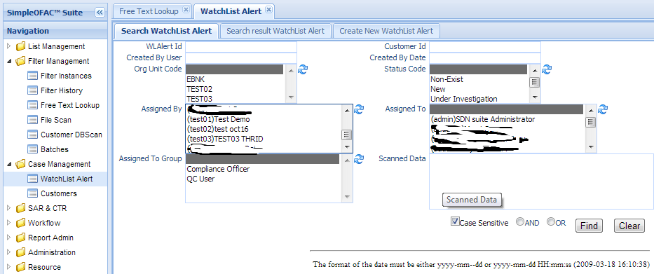
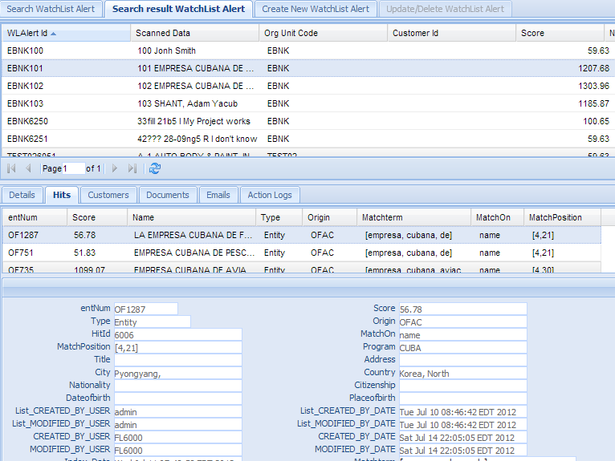
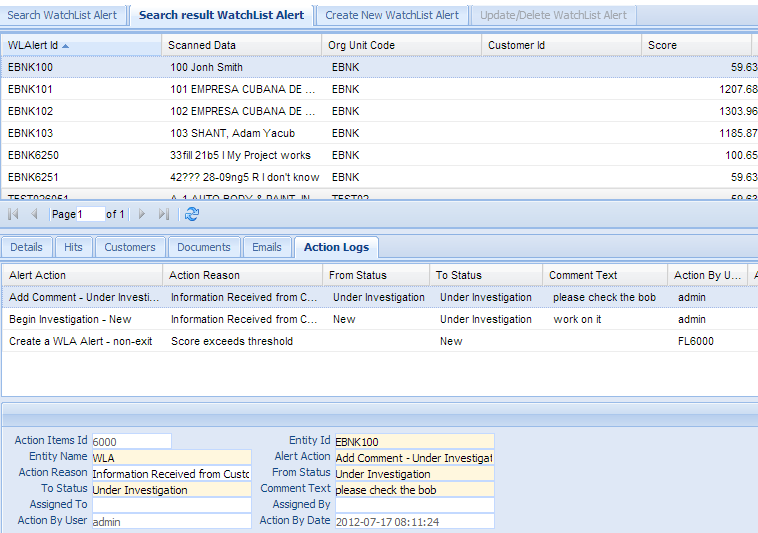
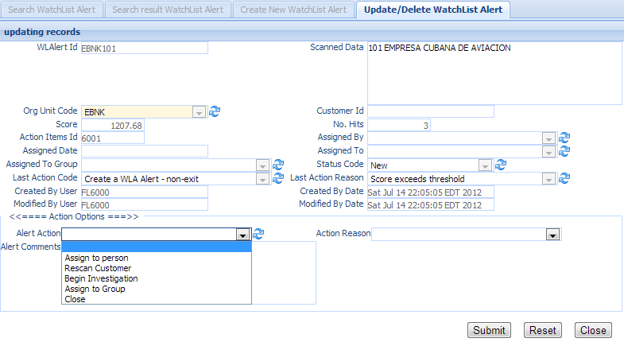
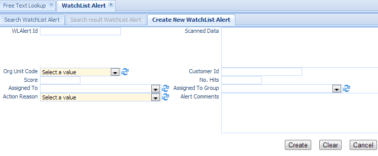

Users scan the customer data via File Scan or customer dbscan in the screening Management. The screening results are loaded into WatchList Alert database for review. This function is used to search watchlist alerts and make decisions on them.
Click the WatchList Alert in the left navigation menu under Case Management, a new WatchList Alert Tab folder will be created in the right panel. There are 3 sub-Tab folders: Search WatchList Alert, Search Result WatchList Alert and Create New WatchList Alert.
Search Criteria
| Field Name | Description |
|---|---|
| WLAlert Id | This is the unique number for the watch list alert entry in the system. |
| Customer Id | Used only when use customer dbscan. |
| CreatedByDate | Date and Time when this entry is created |
| CreatedByUser | User who create this entry. |
| OrgUnit Code | select values from the dropdown list. |
| Status Code | select values from the dropdown list. |
| Assigned By | select values from the dropdown list. |
| Assigned To | select values from the dropdown list. |
| Assigned To | select values from the dropdown list. |
| Group | |
| AND | Select AND radio box if you want those criteria add together. |
| OR | Select OR radio box if you want to get the result if either of the criteria is met. |
The top part is the table which shows the list of the watch list alerts that meet the search criteria. The bottom part is the details, Hits, Customers, Documents, Emails, and Audit Logs of the selected entry.
Each alert has one to many hits. A hit is created when the name or alias of the sanction list match all or part of the customer name. The Hit detail screen shows all the information from the sanction list.
Alert Audit Log with action name, action reason, from status, to status, comment, action by, and action date.
Double Click the selected record in the table to modify this entry. A new tab folder “Update/Delete WatchList Alert” will be added, as shown below.
Select the “Create New WatchList Alert” Tab to create a new entry.
Note
Normally Watchlist alerts are created by File Scan or Customer DBScan.
| Field Name | Description |
|---|---|
| WLAlert Id | This is the unique number for the watch list alert entry in the system. |
| Scanned Data | The data that is scanned by the screening engine. |
| Customer Id | Used only when customer dbscan is used. |
| OrgUnit Code | Select values from the dropdown list. |
| Assigned By | Select values from the dropdown list. |
| Assigned To | Select values from the dropdown list. |
| Assigned To | Select values from the dropdown list. |
| Group | |
| Action Reason | Select from the dropdown list |
| Alert Comments | A free text area to allow users to add comments. |